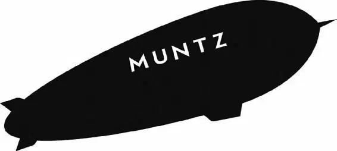

A croaking frog woke Carl the next morning. He sat up and yawned. “Morning, sweetheart,” he said, staring up at the house. The balloons were starting to look a little limp. “We better get moving.” Carl looked around the camp.
“Huh. Bird’s gone,” he said to himself. “Maybe Russell won’t notice.” He raised his voice. “All right, everybody up!”
Russell sat up. “Where’s Kevin?” He jumped to his feet. “He’s wandered off! Kevin! Dug, find Kevin!”
Dug sniffed frantically. “Find the bird. Find the bird. Point!” Dug pointed to the left.
Russell looked to the right. “Oh, look! There he is!”
Kevin was on top of the house. The bird let out a squawk.
Kevin stacked a banana on top of a large pile of food. A tomato rolled from the pile and landed at Carl’s feet with a splat.
“Hey!” Carl complained. “That’s my food! Get off my roof.”
“Yeah!” Dug agreed. “Get off his roof!”
Kevin turned toward a large mass of rock and let out a call.
“What is it doing?” Carl asked.
Dug had spent enough time tracking the bird to know the answer. “The bird is calling to her babies,” he explained.
“Her babies! Kevin’s a girl?” Russell asked in surprise. He smiled at the thought that there were baby Kevins.
The bird called again. After a moment, Russell heard a faint peeping.
Kevin called again, and Carl tilted his head. He could hear the peeping, too.
Kevin answered the call. Then she gobbled the food and slid down the side of the roof.
“Her house is over there in those twisty rocks,” Dug explained as Kevin started toward the large mass of rocks. “She has been gathering food for her babies and must get back to them.”
Kevin turned to Russell. She wrapped the boy in her wings.
“Wait, Kevin’s just leaving?” Russell asked in dismay.
Kevin patted Carl on the head with her beak. She hissed at Dug. Then she headed off toward the rocks.
Russell turned to Carl. “But you promised to protect her. Her babies need her. We’ve got to make sure they’re together.”
Carl looked at the rocks. They were far away— and in the wrong direction. “Sorry, Russell. We’ve lost enough time already. She can take care of herself. And don’t you want to earn your badge?”
Russell looked after Kevin, hesitating. Then he followed Carl. The two started walking, dragging the house once again.
Russell sniffled as he trudged along. “This was her favorite chocolate,” he said, chewing on a candy bar. “Because you sent her away, there’s more for you.”
Carl rolled his eyes. Suddenly, he heard the nearby leaves rustle.
“Kevin?” Russell asked hopefully.
But instead, three large dogs burst through the bushes. Barking furiously, they circled Dug, Russell, and Carl.
Alpha stalked toward Dug.“Where’s the bird?” he snarled. “You said you had the bird.”
“Oh, yes,” Dug said nervously. “Oh, yes. Since I have said that, I can see how you would think that.”
“Where is it?” the Doberman demanded, narrowing his yellow eyes.
Dug looked over at Carl. “Uh, tomorrow. Come back tomorrow and then I will again have the bird.”
Alpha snapped at Dug. “You lost it.Why do I not have a surprised feeling?” He stalked toward Russell and Carl. “Well, at least you now have led us to the small mailman and the one who smells of prunes.”
Dug lowered his head, whimpering. He hadn’t meant to lead Alpha to Carl and Russell!
“Master will be most pleased we have found them,” Alpha snarled, “and will ask of them many questions.” He looked at Carl. “Come!”
“Wait!” Carl shook his head. “We’re not going with you! We’re going to the falls.”
Gamma and Beta growled and barked, baring their fangs.
“Get away from me!” said Carl.
But the dogs didn’t listen to him. It was clear that Carl and Russell had no choice but to follow them.
Carl looked over his shoulder and sighed. The frightening dogs were leading them away from Paradise Falls. This is the wrong direction, he thought with every step. We’re going backward!
To make matters worse, the ground was getting rockier. There were fewer trees and more twisted stones. Walking was becoming harder. And they weren’t allowed to rest.
Finally, they rounded a bend. A large cave yawned in front of them.
Alpha led the group up to the cave entrance. Carl and Russell peered hesitantly inside. Glowing eyes were emerging from the darkness. It took Carl a few moments to realize that it was a pack of dogs. The glowing eyes were actually the lights on their high-tech collars.
“He approaches!” Alpha barked, and the others joined in. “He approaches! He approaches!”
A tall, shadowy figure appeared. “You came here in that?” the man asked Carl slowly. “In a house? A floating house?”
The figure stepped from the shadows. It was an old man. He stared up at the house, then started to laugh. “That’s the darnedest thing I’ve ever seen!” He turned to his dogs. “You boys are slipping. Was it with them when you found them?”
Was what with us? Carl wondered.
Beta shook his head. “No, Master.”
The man took a step forward. Carl noticed that, although the man was older, he was fit and strong. There was something strangely familiar about him. The way he stood, his leather flight jacket— everything about him gave Carl the feeling that they had met before. “Well,” the man said, “this is all a misunderstanding. My, uh, dogs made a mistake.”
“Mistake? I’ll say it’s a mistake. Your dogs just came out and assaulted us!” Carl said angrily.
“Well, you’d best hurry on your way,” said the man. “The sun sets quickly around here. Good journey!” He turned on his heels and walked back into the cave.
Suddenly, Carl realized how he knew him. “Wait—” he called. “Are you Charles Muntz?”
The man hesitated. “Who wants to know?”
A thrill shivered through Carl. “Jiminy Cricket! Is it really you? The Charles Muntz? Could you … would you say it for me?” he asked.
Muntz gave Carl his famous thumbs-up. “Adventure is out there,” he said.
“It’s really him!” Carl shouted. “Charles Muntz! I’m so sorry I got steamed at you. My name is Carl Fredricksen.”
Russell piped up. “I’m Russell!”
“You’ve been gone so long, I’m so glad to see you alive!” Carl shook Muntz’s hand. “My wife and I, we’re your biggest fans. We thought you were the bee’s knees!”
Muntz perked up. “Is that so? You’re a man of good taste!” He looked Carl over. “You must be tired. Hungry?”
Russell’s eyes suddenly lit up.
“Well, come on in!” said Muntz. “I’ll give you the nickel tour.”
Carl and Russell followed Muntz into the cave.
It took a moment for Carl’s eyes to adjust to the darkness. When they did, he saw that he was in a giant room. An airship was tied at the far end. It was the Spirit of Adventure! CHARLES MUNTZ—EXPEDITION 1934 was written on the side. “Go ahead and moor your airship right next to mine,” Muntz said.
Carl’s grin widened as a gangplank was lowered. “We’re not actually going inside the Spirit of Adventure itself?”
“Oh,” Muntz replied, “would you like to?” He started up the gangplank.
Carl and Russell raced to catch up with him. Carl felt giddy. Oh, Ellie! he thought. Look at our adventurers’ club now!
“Not you,” Beta said as Dug tried to follow Carl into the blimp.
“What do we do with Dug?” Gamma asked.
“He has lost the bird,” Alpha snarled. “Put him in the Cone of Shame.”
Gamma and Beta fastened the Cone of Shame around Dug’s neck. It was a giant funnel that went around his head. He looked like a doggie daffodil. Humiliated, Dug skulked down the gangplank, alone. He glanced sadly over his shoulder. He sighed and mumbled through his voice box, “I do not like the Cone of Shame.”
Alpha had never liked Dug, and now he sneered with satisfaction as he pulled a lever and the gangplank clanged shut.
